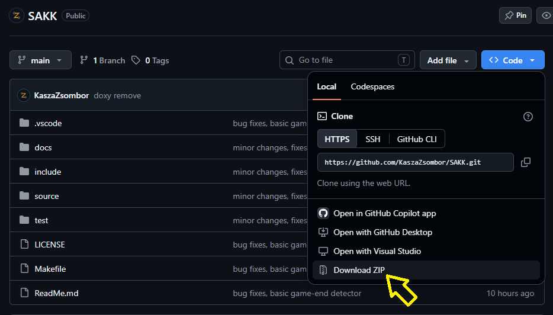
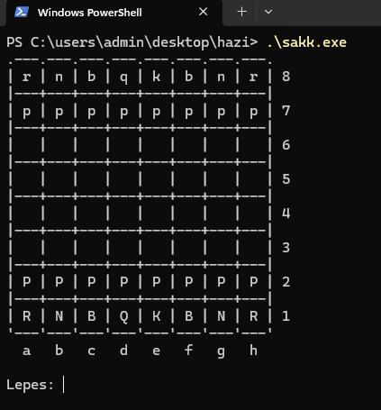

2026/27 őszi félév, sakk program dokumentáció
Ez a dokumentum a Sakk program telepítését, használatát és főbb funkcióit ismerteti.
A dokumentáció célja, hogy a felhasználók megismerjék a program működését, a rendelkezésre álló lehetőségeket és a használat lépéseit.
Telepítési útmutató
Környezet ellenőrzése
Szükséges:
gcc ellenőrzése:
Ajánlott:
git ellenőrzése:
make ellenőrzése:
1. A projekt letöltése
Make és git használatával:
git clone https://github.com/KaszaZsombor/SAKK.git
Lépjen be a letöltött projekt könyvtárába:
Futtassa az alábbi parancsot:
Ha nincs make és git telepítve:

A zip letöltése
Nyissa meg a terminált, majd lépjen be a telepítési könyvtárba:
gcc -Iinclude -std=c99 -c source/board.c -o bin/board.o
gcc -Iinclude -std=c99 -c source/main.c -o bin/main.o
gcc -Iinclude -std=c99 -c source/move.c -o bin/move.o
gcc -Iinclude -std=c99 -c source/movegenerator.c -o bin/movegenerator.o
gcc -Iinclude -std=c99 -c source/ui.c -o bin/ui.o
gcc bin/board.o bin/main.o bin/move.o bin/movegenerator.o bin/ui.o -o sakk.exe
2. A program indítása
Lépjen be a telepítési mappába.
Indítási parancs:
A futó program:

A játék képernyője
Funkciók
1. Sakktábla megjelenítése
A program megjeleníti a sakktáblát és a sakkbábukat.
A felhasználó a táblán követheti az aktuális játékállást, és kiválaszthatja a mozgatni kívánt bábut.
Lépések megadása
A lépéseket a következő formátumok egyikében kell megadni:
- Normál lépés: e2e4 – az e2 mezőről az e4 mezőre történő lépés.
- Gyalog átváltoztatása: f7f8Q – a gyalog az f7 mezőről az f8 mezőre lép, majd vezérré változik.
A megadott formátum felépítése:
- Az első két karakter a kiinduló mezőt jelöli.
- A következő két karakter a célmezőt jelöli.
- Átváltoztatás esetén az utolsó karakter a választott bábu jele, például Q (vezér).
- Ha átváltozás esetén nincs megadva bábu, automatikusan vezérré alakul.
Példák:
- e2e4 – lépés az e2 mezőről az e4 mezőre.
- g1f3 – lépés a g1 mezőről az f3 mezőre.
- f7f8Q – gyaloglépés vezérré változtatással.
3. Szabályos sakk-lépések ellenőrzése
A program a sakk szabályai alapján ellenőrzi a lehetséges lépéseket.
4. További funkciók
A további megvalósított funkciók itt sorolhatók fel, például:
- Sakk és sakk-matt felismerése.
- Patthelyzet felismerése.
- Gyalogátváltozás kezelése.
- Lépések és játékállások megjelenítése.
Linkek
Projekt elérhetősége
A projekt GitHub-oldala itt elérhető
A dokumentáció
A projekt dokumentációja itt elérhető